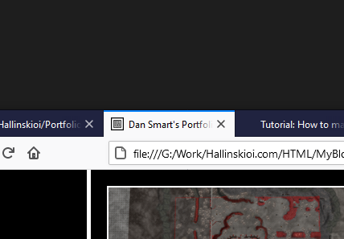

My Tutorials & Blogs

How to make a Custom MiniMap for Dawn of War
Read Time: 5minsSeeing as Relic News is down and various Youtube videos no longer exist. I can't find a link to explain how to make mini maps. So I'm making a tutorial.
Tags: #DawnofWar

How to make a Custom Icon for your Website
Read Time: 2minsA short read as this is potentially more for myself than others, but here's a tutorial on how to make a custom icon for your site.
Tags: #WebDesignMy First Blog
Read Time: 3minsThis is my first blog on my first fully custom-built Website. I hope it doesn't break!
Tags: #Blog